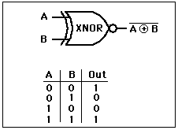

Making an XNOR Gate
The exclusive NOR is and exclusive OR followed by an inverter. The following is one way to make it using basic gates.

| Basic Gates |
Electronics concepts
Digital Circuits
| HyperPhysics*****Electricity and magnetism | R Nave |
XNOR GateThe output is high when both inputs A and B are high and when neither A nor B is high. 
|
Index Electronics concepts Digital Circuits | ||
|
Go Back |
Making an XNOR GateThe exclusive NOR is and exclusive OR followed by an inverter. The following is one way to make it using basic gates.
|
Index Electronics concepts Digital Circuits | ||
|
Go Back |